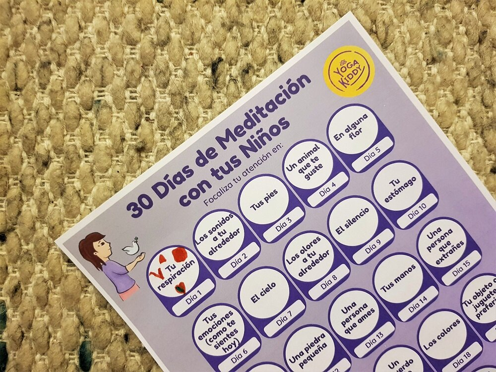

Meditar es "prestar atención a". Un acto que suena tan fácil al leerlo, pero que debido a la constante sobreestimulación a la que estamos expuestos, tomar un momento para "meditar" puede volverse algo muy lejano y difícil.
De hecho, hoy estamos solicitados constantemente por: teléfono, internet, redes sociales, mensajes de texto, notificaciones, llamadas, actividades, obligaciones, pensamientos que nos rodean, el famoso "debemos" ... "
Hacemos varias cosas al mismo tiempo y pasamos de una actividad a otra sin siquiera darnos cuenta. Los niños no se libran de este fenómeno. Además, los investigadores en neurociencia han demostrado que esto tiene un impacto en nuestra capacidad de concentración.
Meditar, por lo tanto, permite que tu cerebro se calme al enfocar tu atención en el momento presente.
Los efectos de esta práctica son increíbles, ya que la meditación por sí sola permite ser más inteligente (fortalece la concentración, mejora la memoria, estimula la creatividad), para vivir más tiempo (ayuda a retrasar el envejecimiento celular) y ser más feliz (permite la liberación de las hormonas del bienestar: serotonina, dopamina, endorfina, permite alejar las emociones desagradables y aprender a enfocarse en lo positivo).
Hoy en días de cuarentena y dado que la gran mayoría se encuentra en casa con sus pequeños, queremos compartirles una actividad para iniciar a nuestros niños y niñas en la meditación (o tal vez para nosotros mismos), mediante simples actividades que se pueden realizar (idealmente) en familia.
Cada día junto a tu(s) niñ@(s), deben enfocar la atención en algo muy simple. Para ello, hemos preparado un calendario que puedes descargar más abajo o tal vez pueden crear uno propio ;-)
Antes de comenzar, lo ideal es establecer una hora del día. Puede ser al levantarse, o después de lavarse los dientes, o después del desayuno, etc. Fijar un horario que se pueda mantener durante los próximos 30 días. Te recomendamos usar un reloj de arena o una alarma para no generar ansiedad en cuanto tiempo nos falta para terminar y comenzar por 2 minutos, luego 3, 4 o 5. No debemos imponer un tiempo que llegue a ser incómodo para nuestros niños. El objetivo es que sea un momento de disfrute y conciencia.
Luego de terminar ese momento de meditación o contemplación, pueden compartir lo que cada uno sintió o bien, conversarlo al final del día, para que, durante la jornada podamos tener reflexiones personales sobre la experiencia vivida. Lo importante, es que, ya sea de manera inmediata o durante el día, exista este intercambio de sensaciones, ya que abrirá una puerta de conversación y conexión completamente diferente en nuestra familia.
En el calendario que les compartimos, dejamos cada día con un circulo en blanco para que puedan ir coloreando una vez terminada la actividad o bien dibujar algo, que les permita recordar la actividad que se ha realizado.
Esperamos que esta actividad les regale hermosos momentos junto a sus niños y niñas y que sea el comienzo de un camino de grandes descubrimientos y sobretodo, de aprender a contemplar con amor las pequeñas cosas que forman parte de nuestra vida cotidiana.
Un abrazo, Carmen 🙏